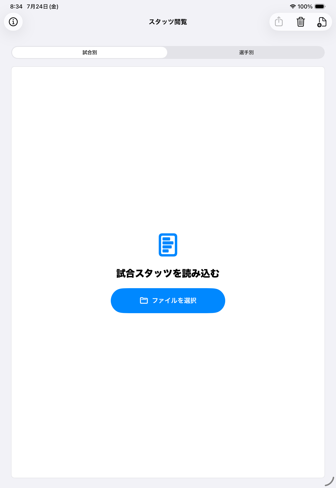
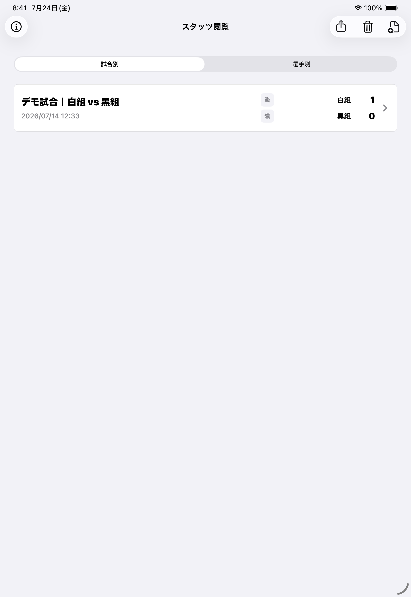
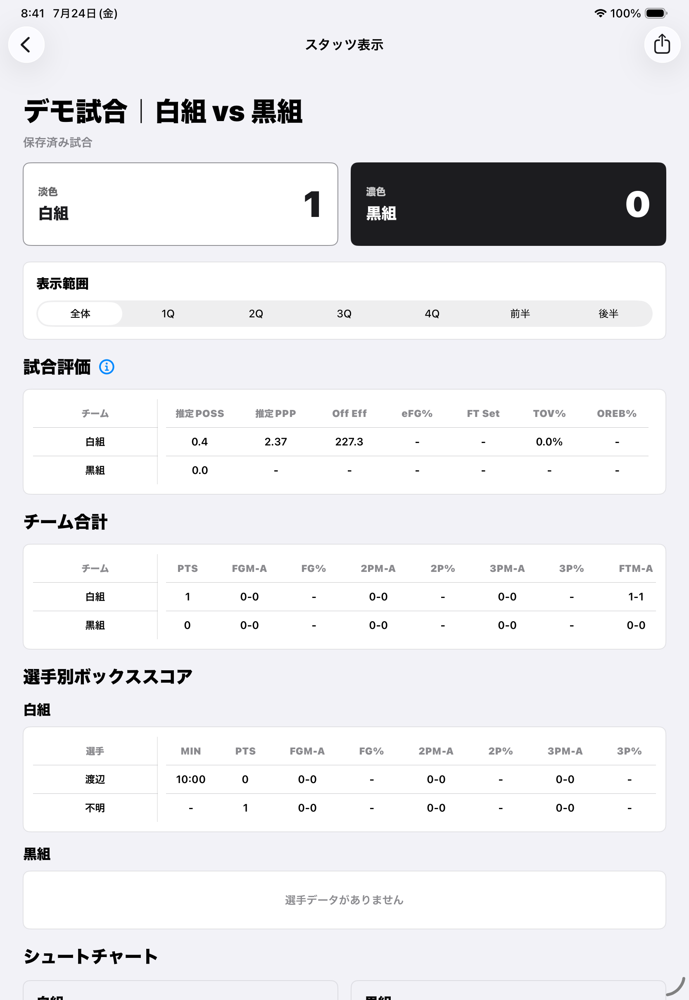

iPhone / iPadで見る
Readerの使い方
Writerから受け取った.bbstats／.bbplayerを読み込み、試合や選手のスタッツを閲覧します。 Readerでは試合内容を編集しません。
1. ファイルを受け取る
Readerは、Writerが書き出した.bbstatsまたは.bbplayerを読み込みます。 Files、AirDrop、メール、メッセージなど、iOSの共有機能を使って受け取れます。
2. Readerへ読み込む
Readerからファイルを選ぶ
- Readerを開きます。
- 空の画面では「ファイルを選択」、取り込み後は右上の読み込みボタンを選びます。
- Filesから.bbstatsまたは.bbplayerを選びます。
- 検証が完了すると、試合別または選手別へ追加されます。
複数の対応ファイルを一度に選んで、まとめて読み込むこともできます。
受け取った場所から直接開く
FilesやAirDropなどでファイルを選び、「Basketball Stats Readerで開く」を選ぶ方法もあります。 Readerが起動し、検証後にライブラリへ保存します。
{kind=link}

3. 試合スタッツを見る
「試合別」には、読み込んだ試合が新しい順に表示されます。カードをタップすると試合詳細を開きます。
{kind=link}

{kind=link}

試合詳細では、最終スコア、試合評価、チーム合計、選手別box score、シュートチャートを確認できます。 表示範囲は全体、各クオーター、前半、後半へ切り替えられます。
4. 選手スタッツを見る
- 画面上部で「選手別」を選びます。
- 選手名で検索したり、チームで絞り込んだりします。
- 選手をタップし、平均、試合別成績、ゾーン、密度を確認します。
読み込んだ複数試合と.bbplayerを横断して集計します。同じ試合・同じ選手のデータは 一度だけ数えるため、あとから完全な試合ファイルを読み込んでも二重計上しません。
6. 削除・復元する
試合一覧で左へスワイプすると、ファイルをゴミ箱へ移動できます。 右上のゴミ箱から復元または完全削除を選べます。
.bbplayer由来の選手データもゴミ箱へ移動できます。同じ選手に試合由来の成績がある場合は、 .bbplayerを削除しても試合から得た成績は残ります。